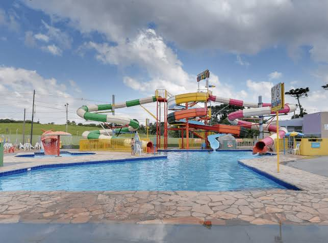
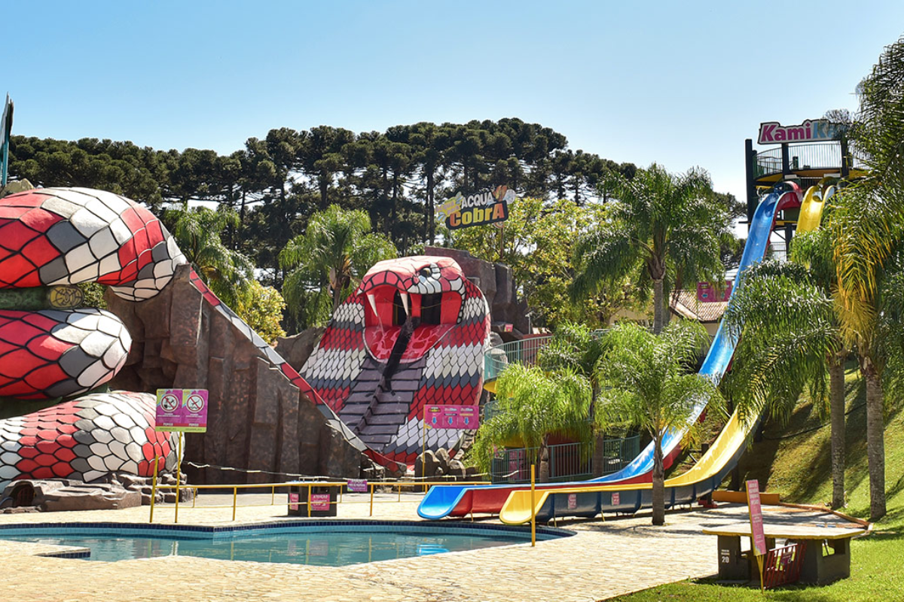
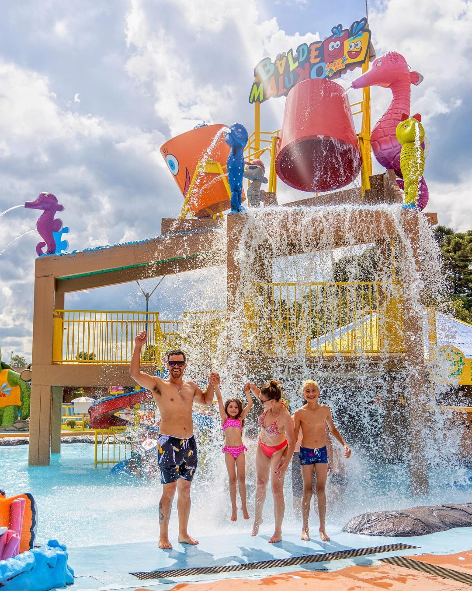
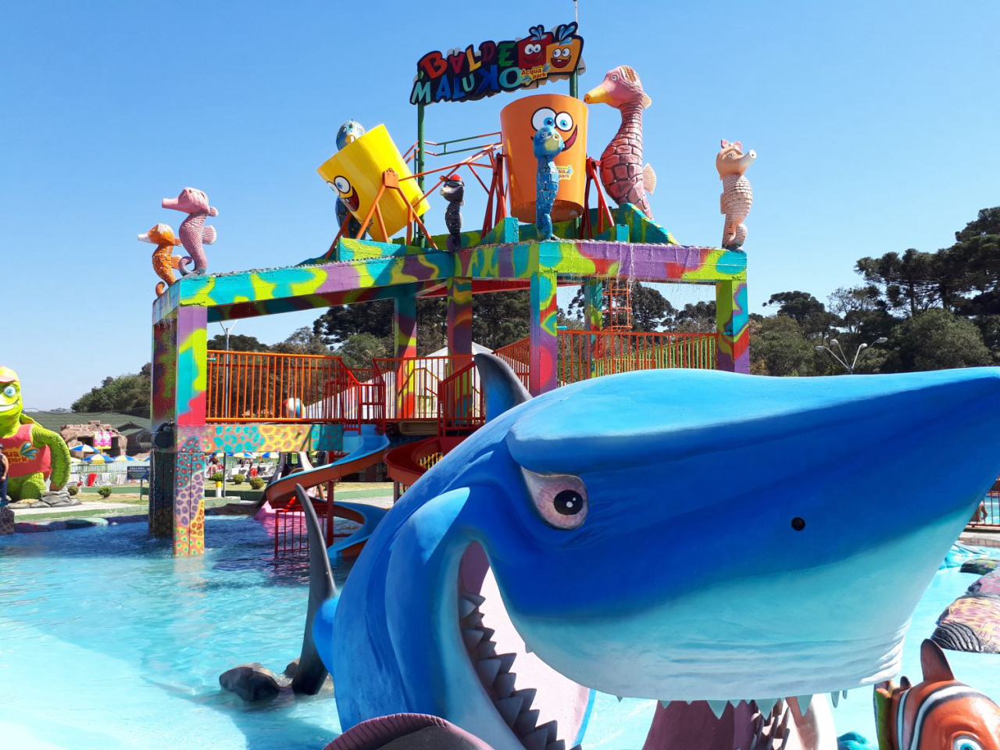

Sobre o Acqua Park
O acqua Park Araucária é um parque aquático localizado na cidade de Araucária, no estado do Paraná. É um lugar voltado para o lazer, a diversão e o entretenimento de pessoas de diferentes idades. O parque conta com diversas atrações aquáticas, como piscinas, toboáguas, piscina de ondas e outras opções para aproveitar os dias de calor. Cada atração oferece uma experiência diferente, desde momentos mais tranquilos para relaxar até atividades mais animadas para quem gosta de aventura e emoção. Além disso, o local é uma ótima opção para passear com a família e os amigos, sair da rotina e aproveitar o tempo livre. Os visitantes podem se divertir, descansar e criar boas lembranças. O Acqua Park Araucária também é uma opção de lazer para moradores da região e pessoas que vêm de outras cidades, contribuindo para o entretenimento e o turismo local. Assim, o parque se destaca como um espaço para aproveitar momentos agradáveis, reunir pessoas e desfrutar de diferentes atividades recreativas.

Importância Cultural
O parque é uma opção de lazer para os moradores de Araucária e também para pessoas de outras cidades da região. O local proporciona momentos de diversão e convivência entre famílias e amigos, além de contribuir para o turismo da região.

Contexto Histórico
O Acqua Park Araucária foi criado como um espaço de lazer e turismo. Ele está localizado em Araucária, na Região Metropolitana de Curitiba.O fundador e administrador do parque foi Carlos Repinoski. Com o passar dos anos, o parque recebeu diferentes atrações aquáticas e espaços para recreação.

Principais Atrações
Entre as atrações do parque estão a piscina de ondas, o rio lento, piscinas temáticas e toboáguas. Essas atrações atendem pessoas que procuram diversão e também momentos mais tranquilos.
Curiosidade 1
O Araucária Acqua Park, situado na região metropolitana de Curitiba, ocupa uma área impressionante de 240 mil metros quadrados. O grande diferencial do complexo é a fusão perfeita entre a adrenalina dos toboáguas e a natureza preservada.
Curiosidade 2
Com mais de 20 anos de história, o parque aquático já se consolidou como uma das principais opções de lazer do Paraná. O local conta com uma estrutura robusta de mais de 20 atrações, que vão desde uma piscina de ondas até o radical Kamikaze.
diversão da familia
acqua park araucaria
imagens em memoria ao aqcua park araucaria.